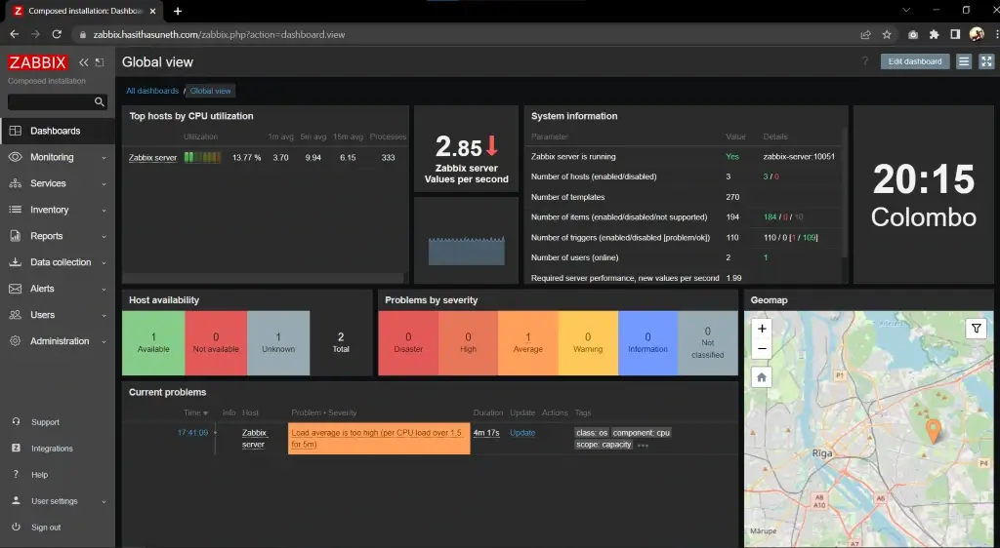
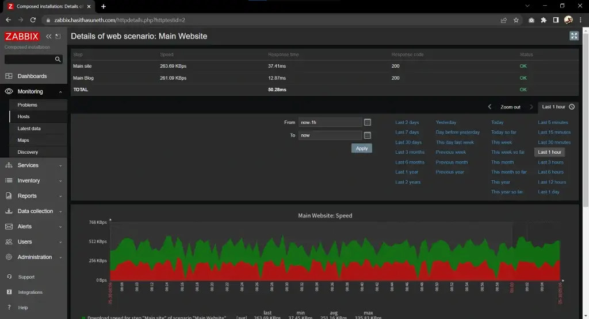
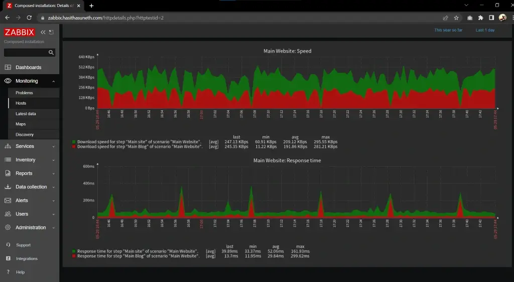
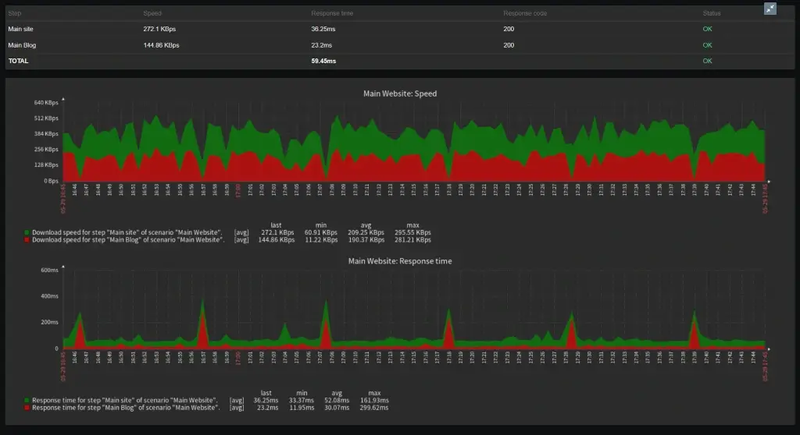
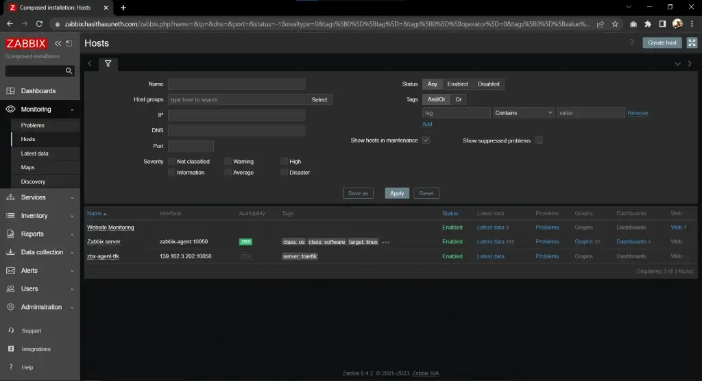

Zabbix Deployment
Zabbix is an open-source monitoring solution that provides real-time visibility into IT infrastructure, helping businesses track the performance and health of networks, servers, applications, and cloud services.
Table of contents
What is Zabbix?
Zabbix is a robust and flexible open-source monitoring platform designed to monitor IT infrastructure and ensure systems’ health and availability. It is widely used by organizations to gain detailed insights into their environment and to prevent downtime through proactive monitoring. Key features include:
- Comprehensive Monitoring: Tracks performance metrics for networks, servers, applications, and cloud environments.
- Real-Time Data Collection: Captures metrics via SNMP, IPMI, agent-based, and agentless methods.
- Customizable Dashboards: Offers user-defined graphs, maps, and reports for visualizing data effectively.
- Alerts and Notifications: Configurable triggers and notifications via email, SMS, or integrations with tools like Slack or Telegram.
- Scalability: Supports small environments and large-scale, distributed infrastructures.
- Open-Source and Extensible: Highly customizable with APIs, templates, and a community-driven ecosystem.
Zabbix is a go-to solution for IT professionals seeking a reliable, cost-effective, and feature-rich tool to maintain infrastructure reliability and performance.

When deploying Zabbix with Docker, there are several core containers you need to set up, along with optional containers that enhance its monitoring capabilities.
Core Containers (Essential for Zabbix to Function)
Zabbix Server
The central component that processes monitoring data, manages triggers, and sends notifications. Links to the database and connects to agents or proxies.
Docker Image: zabbix/zabbix-server-mysql (or zabbix-server-pgsql for PostgreSQL).
Database
Stores all configuration, history, and monitoring data. Supported options: MySQL, MariaDB, or PostgreSQL.
Docker Image: For MySQL: mysql or mariadb. For PostgreSQL: postgres.
Frontend (Web Interface)
Provides a user-friendly UI to configure, monitor, and analyze your setup.
Docker Image: zabbix/zabbix-web-nginx-mysql (or zabbix-web-nginx-pgsql for PostgreSQL).
Optional Containers (For Enhanced Capabilities)
Zabbix Agent
Collects monitoring data from hosts. Used for agent-based monitoring.
Docker Image: zabbix/zabbix-agent.
Zabbix Java Gateway
Enables monitoring of Java applications via JMX.
Use Case: Monitoring JVM performance metrics, Java applications, or middleware like Tomcat or Kafka.
Docker Image: zabbix/zabbix-java-gateway.
Zabbix SNMP Traps
Adds support for SNMP trap collection.
Use Case: Real-time event monitoring from SNMP-enabled devices like switches and routers.
Docker Image: zabbix/zabbix-snmptraps.
Zabbix Proxy
A distributed monitoring component to offload the main server.
Use Case: Useful in large or geographically distributed environments to minimize latency and improve scalability.
Docker Image: zabbix/zabbix-proxy-mysql (or zabbix-proxy-pgsql, zabbix-proxy-sqlite3).
TimescaleDB
Extends the database for more efficient storage and querying of historical data.
Use Case: Recommended for large-scale setups to improve performance.
Docker Image: timescale/timescaledb.
Alerting Tools
Use additional containers for integrations with alerting and communication tools (e.g., Slack, Telegram, PagerDuty). While not native Zabbix containers, they can be part of the ecosystem.
To minimize complexity, we will use Docker Compose to deploy Zabbix.
Steps to follow
- Install Docker, and Docker-Compose
- Deploy Zabbix
Install Docker, and Docker-Compose
Install Docker Engine
Note
Find the official guide here. Follow this official guide for install Docker on other Linux distribution systems.
1. Uninstall old versions
sudo apt-get remove docker docker-engine docker.io containerd runc
2. Set up the repository
Update the apt package index and install packages to allow apt to use a repository over HTTPS:
sudo apt-get update sudo apt-get install ca-certificates curl gnupg lsb-release
Add Docker’s official GPG key:
sudo mkdir -m 0755 -p /etc/apt/keyrings curl -fsSL https://download.docker.com/linux/ubuntu/gpg | sudo gpg --dearmor -o /etc/apt/keyrings/docker.gpg
Use the following command to set up the repository:
echo \ "deb [arch=$(dpkg --print-architecture) signed-by=/etc/apt/keyrings/docker.gpg] https://download.docker.com/linux/ubuntu \ $(lsb_release -cs) stable" | sudo tee /etc/apt/sources.list.d/docker.list > /dev/null
3. Install Docker Engine
sudo apt-get update sudo apt-get install docker-ce docker-ce-cli containerd.io
Verify that the Docker Engine is installed correctly.
sudo systemctl is-active docker
Install Docker-Compose
Ensure that the Docker Compose version you are using is v2 or higher. In this case (29/12/2024), it is v2.31.0; Refer to the GitHub Releases to identify the latest version.
Download and install Compose standalone latest version
curl -SL https://github.com/docker/compose/releases/download/v2.31.0/docker-compose-linux-x86_64 -o /usr/local/bin/docker-compose sudo chmod +x /usr/local/bin/docker-compose
Verify that the Docker-Compose is installed correctly.
sudo docker-compose --version
Tip:
If the command docker-compose fails after installation, check your path. You can also create a symbolic link to
/usr/binor any other directory in your path. For example:
sudo ln -s /usr/local/bin/docker-compose /usr/bin/docker-compose
Deploy Zabbix
Clone the official Zabbix Docker repository, which includes various Docker Compose configurations using different technologies.
git clone https://github.com/zabbix/zabbix-docker.git
The structure of the Zabbix repository is as follows:
└── 📁zabbix-docker-7.0
└── 📁Dockerfiles
└── 📁agent
└── 📁agent2
└── 📁build-base
└── 📁build-mysql
└── 📁build-pgsql
└── 📁build-sqlite3
└── 📁java-gateway
└── 📁proxy-mysql
└── 📁proxy-sqlite3
└── 📁server-mysql
└── 📁server-pgsql
└── 📁snmptraps
└── 📁web-apache-mysql
└── 📁web-apache-pgsql
└── 📁web-nginx-mysql
└── 📁env_vars
└── 📁mysql_init
└── init_proxy_db.sql
└── .env_agent
└── .env_db_mysql
└── .env_db_mysql_proxy
└── .env_db_pgsql
└── .env_java
└── .env_prx
└── .env_prx_mysql
└── .env_prx_sqlite3
└── .env_snmptraps
└── .env_srv
└── .env_web
└── .env_web_service
└── .MYSQL_PASSWORD
└── .MYSQL_ROOT_PASSWORD
└── .MYSQL_ROOT_USER
└── .MYSQL_USER
└── .POSTGRES_PASSWORD
└── .POSTGRES_USER
└── chrome_dp.json
└── .env
└── .gitignore
└── .pre-commit-config.yaml
└── build.json
└── build.sh
└── compose_additional_components.yaml
└── compose_databases.yaml
└── compose_zabbix_components.yaml
└── compose.yaml
└── docker-compose_v3_alpine_mysql_latest.yaml
└── docker-compose_v3_alpine_mysql_local.yaml
└── docker-compose_v3_alpine_pgsql_latest.yaml
└── docker-compose_v3_alpine_pgsql_local.yaml
└── docker-compose_v3_centos_mysql_latest.yaml
└── docker-compose_v3_centos_mysql_local.yaml
└── docker-compose_v3_centos_pgsql_latest.yaml
└── docker-compose_v3_centos_pgsql_local.yaml
└── docker-compose_v3_ol_mysql_latest.yaml
└── docker-compose_v3_ol_mysql_local.yaml
└── docker-compose_v3_ol_pgsql_latest.yaml
└── docker-compose_v3_ol_pgsql_local.yaml
└── docker-compose_v3_ubuntu_mysql_latest.yaml
└── docker-compose_v3_ubuntu_mysql_local.yaml
└── docker-compose_v3_ubuntu_pgsql_latest.yaml
└── docker-compose_v3_ubuntu_pgsql_local.yaml
└── kubernetes.yaml
└── LICENSE
└── README.md
└── SECURITY.md
The repository includes various Docker Compose files that can be used to deploy the Zabbix system. For example:
docker-compose_v3_alpine_mysql_latest.yaml: This file uses Alpine as the base image, MySQL as the database, and pulls the latest Zabbix image from Docker Hub.docker-compose_v3_alpine_mysql_local.yaml: This file also uses Alpine as the base image and MySQL as the database but builds the Zabbix image locally using the provided Dockerfile.
Database secrets are stored in the env_vars directory. You need to update those files based on your database selection (MySQL or PostgreSQL) to ensure proper configuration.
└── 📁zabbix-docker-7.0
└── 📁env_vars
└── .MYSQL_PASSWORD
└── .MYSQL_ROOT_PASSWORD
└── .MYSQL_ROOT_USER
└── .MYSQL_USER
└── .POSTGRES_PASSWORD
└── .POSTGRES_USER
Zabbix can be deployed in two ways without modifying the Docker Compose files:
- Deployment with Core Containers Only: This setup includes the essential containers required for Zabbix to function properly, such as the Zabbix Server, database, and front-end.
docker-compose -f <docker-compose-file-name> up -d
# Example
docker-compose -f docker-compose_v3_alpine_mysql_latest.yaml up -d
- Deployment with Core and Optional Containers: This configuration includes all core containers along with additional optional containers that provide extended features, such as monitoring proxies, Java gateways, Zabbix agent, and more.
docker-compose -f <docker-compose-file-name> --profile all up -d
# Example
docker-compose -f docker-compose_v3_alpine_mysql_latest.yaml --profile all up -d
Both deployment methods by default create an NGINX container to handle and redirect traffic on web ports such as port 80 and port 443.
In addition, the ‘profile all’ method also creates an Apache container, which listens on port 8081 and port 8443. This setup provides flexibility in handling web traffic, allowing you to choose between different web server configurations based on your requirements.
If you want to create specific containers, you can comment out the code sections for unwanted containers in your preferred Docker Compose file. After that, run the deployment using the --profile all parameter. This allows you to customize the deployment to include only the containers you need.
Login to the Zabbox web interface
Default Admin User:
Username: Admin
Password: zabbix
Now you can log in to the web UI. Simply use your browser to connect to your server by using the IP address or an FQDN.
Next, you should change your username and password, and that’s it!
Screenshots




